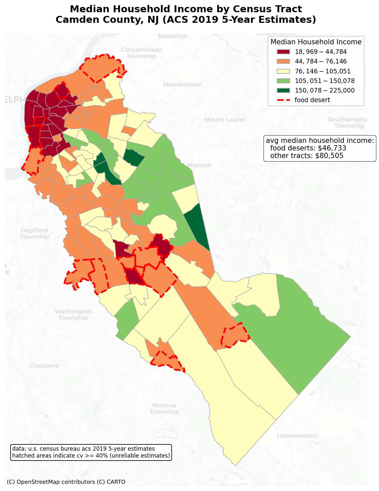
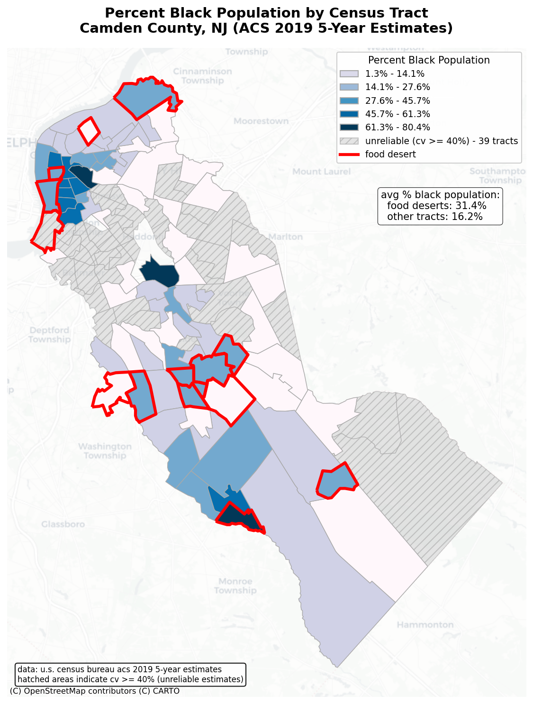
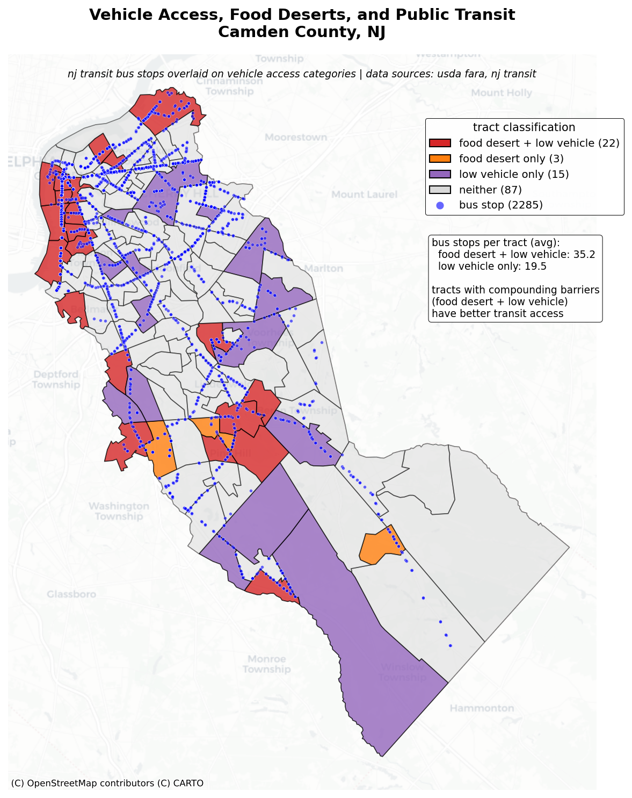
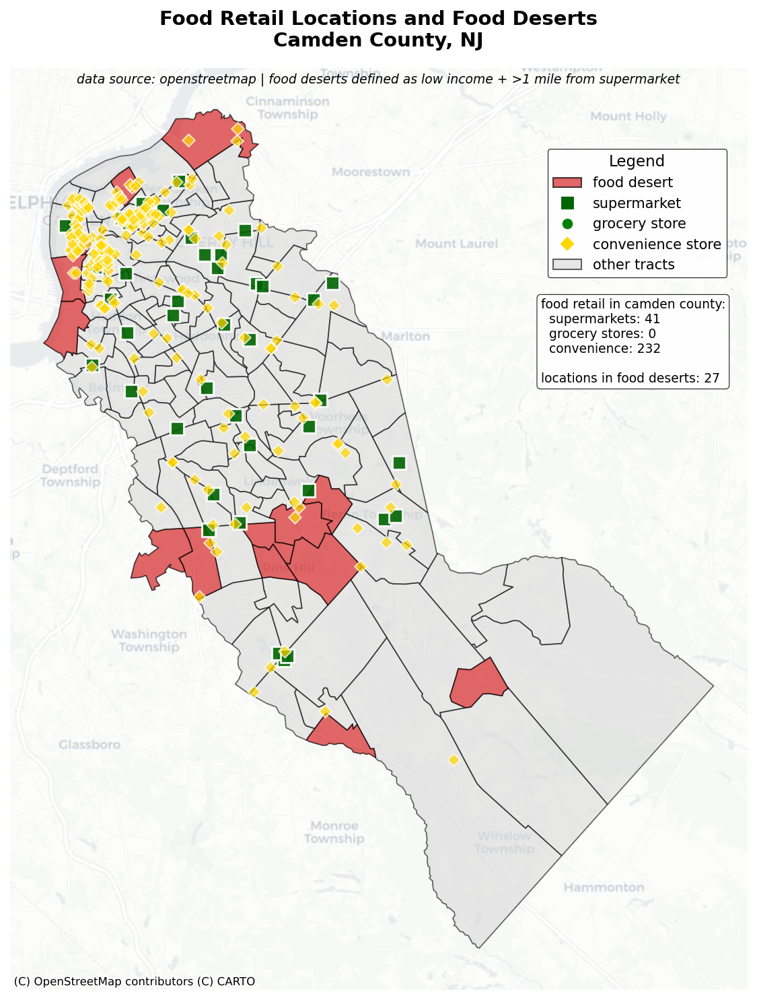

1. Project Overview
This project examines "Food Deserts" in Camden County—areas defined by the USDA as having both low income and low access to nutritious food. By overlaying demographic and transit data, we attempt to understand the spatial characteristics of these communities and identify gaps in the transit network.
2. Data Sources & Methodology
To analyze the intersection of food access and demographics, we utilized three primary datasets processed in Python using GeoPandas:
- USDA Food Access Research Atlas (2019): Used to identify census tracts flagged as "Low Income and Low Access" (LILA) at 1/2 mile and 1-mile thresholds.
- US Census Bureau (ACS 2019): Provided demographic granularity, specifically Median Household Income and Racial composition (Black/African American population percentages) to correlate with food access status.
- NJ Transit Open Data: Bus stop shapefiles were overlaid on census tracts to calculate the density of transit options within identified food deserts.
Methodology: Data was merged on FIPS codes. We performed a spatial join between the bus stop coordinates and census tract polygons to generate a "Stops per Tract" metric. We then categorized tracts into "Food Desert" vs. "Non-Desert" to perform a comparative statistical analysis of transit density.
3. Static Map Analysis
Median Income Distribution
Figure 1: Distribution of household income across tracts. Darker regions indicate lower income levels.
Demographic Concentration (Black Population)
Figure 2: Percentage of Black residents per tract. There is a visible overlap with low-income areas.
Vehicle Access vs. Transit Availability
Figure 3: Households without vehicles plotted against transit availability.
Grocery Retail Locations (OSM)
Figure 4: Locations of food retail points extracted from OpenStreetMap.
4. Interactive Web Maps
Map 1: Food Desert Classification
This interactive map visualizes the specific tracts designated as food deserts by the USDA.
Interactive View 1: Toggle over areas to see specific FIPS codes and status.
Map 2: Multi-Layer Deep Dive
This map allows for a layered exploration of the relationship between poverty, demographics, and bus stops. Use the layer control in the top right corner to toggle variables on and off.
Interactive View 2: Layer control enabled for bus stops, income, and racial demographics.
5. Key Findings
Our analysis revealed a significant correlation between food desert status and poverty rates in Camden County. Furthermore, these regions have a disproportionately high percentage of Black residents.
Most notably, we observed a "Transit Paradox": While the urban center contains the highest density of bus stops, it also contains the highest concentration of food deserts. This suggests that physical proximity to transit stops does not necessarily equate to food security if the transit routes do not connect efficiently to grocery retailers.